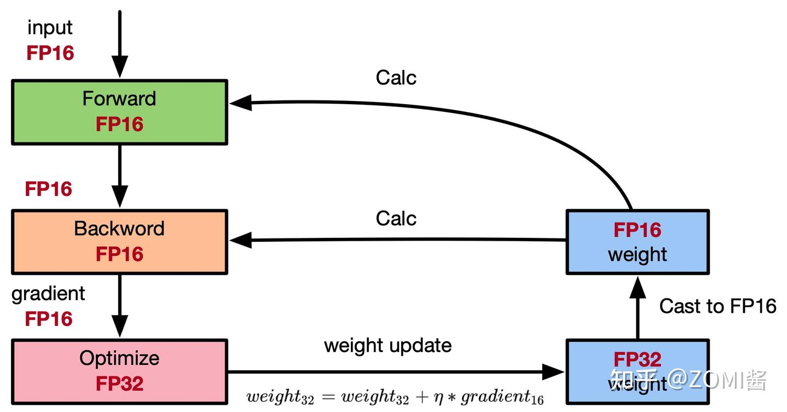
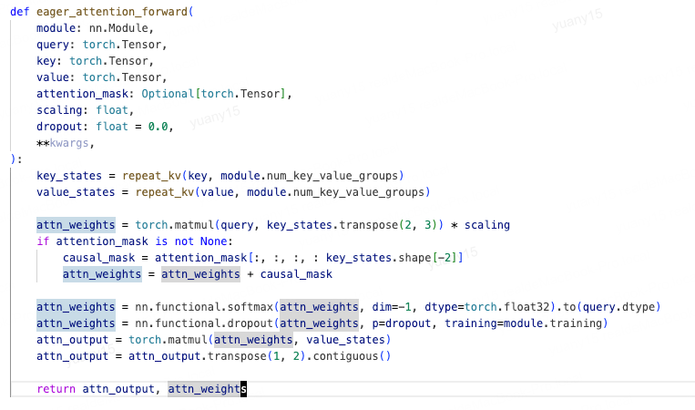
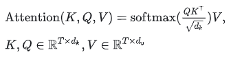
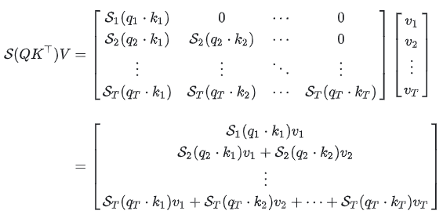
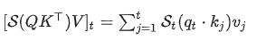
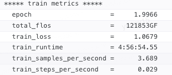

参数量、显存与计算量分析
本文目录 19 个章节 · 展开查看
先分清三个问题：参数量是在数模型里有多少个可学习的数；显存是在数某个时刻要保存多少字节；计算量是在数处理数据时执行多少运算。它们有关联，但不能互相替代。本文按“矩阵形状 → 元素个数 → 字节或运算次数”逐项计算；GB 使用 字节，GiB 使用 字节。
1. 统一符号
| 符号 | 含义 |
|---|---|
| 层数、hidden size、MLP intermediate size、词表大小 | |
| Q head 数、KV head 数、head dimension；本页假设 | |
| KV 投影宽度 | |
| 单 rank 的 micro-batch size、实际计算序列长度 | |
| 参数量、训练 token 数 |
2. 模型参数量
一个 decoder 模型通常包括：输入 embedding、重复 次的 Transformer block、末端归一化、输出词表头。先算清一个 block 中 Attention、MLP 和归一化各有多少参数，再乘层数，最后加只出现一次的词表层等部分。是否共享参数、是否带偏置，要按具体配置决定。
2.1 Attention
对于输入宽度 、输出宽度 的线性投影 ，每个输出特征都需要对全部输入特征加权，因此 有 个参数；如果启用偏置 ，还要加 个。这里用数学上的 记号，PyTorch 存储权重时可能转置，但元素数不变。
在本页的 Attention 设定中，query 总宽度为 ；K/V 总宽度为 。GQA 让多个 query head 共享一组 K/V head，所以 K/V 投影可能比 Q 投影窄。分别列出四个投影：
| 投影 | 权重形状 | 权重参数数目 | Qwen 示例的偏置 |
|---|---|---|---|
| Q | |||
| K | |||
| V | |||
| O | 无 |
四个矩阵元素数相加才得到下面的总式，不能因为有三个 QKV 投影就一律写成 。
Q、K、V、输出投影的权重参数量为：
MHA 中 ，退化为 。GQA/MQA 不应直接近似成 MHA；head dimension 不满足上述假设时，应直接按四个矩阵形状求和。
若只有 QKV 使用偏置：
因此 Qwen GQA 的“三个偏置”不等于 ：K、V 的输出维度更小。
配图与实现示例


2.2 MLP、归一化、词表层
对于普通两层 MLP，第一层把每个 token 从宽度 映射到 ，因此有 个权重和 个偏置；第二层从 映射回 ，因此有 个权重和 个偏置。把两层相加：
SwiGLU 则有 gate 与 up 两条从 到 的投影，再由 down 从 回到 。三组矩阵都要训练；忽略偏置时：
标准 affine LayerNorm 通常有 gamma、beta 两组参数，每层 ；Qwen 使用只有 scale 的 RMSNorm，每层 。一个 Qwen block 内两次 RMSNorm 共 ，此外整个 decoder 还有 final RMSNorm。
embedding 为 ；只有配置确实共享 input embedding 与 lm_head 时才只计一份。未共享时，两个矩阵合计 。
配图与实现示例


2.3 Qwen2.5-7B-Instruct 精确示例
官方配置：，因此 ，且 tie_word_embeddings=false。
在 中，前两项计 Attention 权重，括号项计 QKV 偏置， 计 SwiGLU， 计 block 内两次 RMSNorm。总式中的 是所有 block， 是未共享的输入/输出词表矩阵，最后的 是整个 decoder 的 final RMSNorm。官方模型卡将结果标为约 7.61B。

3. 训练显存
3.1 模型状态与峰值
模型状态包括参数本身、反向得到的参数梯度，以及优化器为了下一次更新而保存的信息。它们主要随参数量 增长；前向激活和临时工作区则还受 batch、序列长度和内核实现影响。
以低精度权重/梯度、FP32 主权重与 Adam 状态的传统配置为例：每个参数有一份 2 byte 计算权重、一份 2 byte 梯度，以及三份 4 byte 状态。所以先算每参数的字节数，再乘参数量：
上式五项依次是：低精度计算权重 、低精度梯度 、FP32 主权重 、Adam 一阶矩 、二阶矩 。这里暂时只统计模型状态，不含激活。
例如按教学用 计算，状态为 112GB，约 104.31GiB。实际 Qwen 参数量更大；训练峰值还需加上激活、通信和临时缓冲。梯度 dtype、AMP、优化器、分片会改变系数，详见混合精度。

混合精度图的更新符号
最小化损失时，若 gradient 表示损失梯度，图中的 weight32 + η * gradient16 应使用减号。FP16/FP32 分工是一种示例配置。
3.2 教学版激活估算
下面公式针对保存反向所需激活、普通 MHA、两层 MLP、LayerNorm、启用相应 dropout、未用 FlashAttention 和重计算的教学模型。假设保存的主要激活为 2 bytes，dropout mask 为 1 byte；不能把任意 int 或 attention mask 都当成 1 byte。
激活显存为什么会大：前向算过的张量，反向求导时还可能要用，因此不能全部立即释放。例如线性层的权重梯度需要它的输入，softmax 的梯度可以由其输出计算。下面列的是为反向保留下来的对象，不是把前向出现过的所有变量都重复相加。
先展开 Attention 的每一项。 一个 token 表示张量有 个元素，按 2 byte 保存就是 。而每个 head 的注意力权重有 个位置对，共 个 head，因此有 个元素。这两类形状分别产生下面的一次项与序列长度二次项：
| 保存对象 | 形状 / 元素数 | 每元素字节 | 字节数 |
|---|---|---|---|
| QKV 三个投影共享的输入 X | 2 | ||
| Q、K，供 QKᵀ 反向使用 | 2 | ||
| softmax 输出，供其反向使用 | 2 | ||
| softmax 后 dropout 的 mask | 1 | ||
| dropout 后的注意力权重，供乘 V 的反向使用 | 2 | ||
| V | 2 | ||
| O 投影的输入 | 2 | ||
| O 投影后 dropout 的 mask | 1 |
把 和 分别收集：
再展开普通 MLP。 中间宽度为 ：
| 保存对象 | 形状 / 元素数 | 字节数 |
|---|---|---|
| 第一个线性层输入 | ||
| 激活函数输入 | ||
| 第二个线性层输入，即激活函数输出 | ||
| MLP 输出 dropout 的 mask |
最后加入两次 LayerNorm。 每次保留一份输入，近似为 byte；均值、方差等 小项在此教学估计中忽略：
三个部分相加，再乘层数：
可以看到，34 是线性大小激活项的字节系数之和，而 5 来自注意力概率及 mask 等 大小对象。它们已经包含 dtype 字节数，不能再整体乘一次 2。计数口径参考 Reducing Activation Recomputation 的 §4.1，输出 logits/loss 等张量需另计。实现若复用同一存储、融合算子或改变保存策略，应按实际存储去重，不能把本表当作所有框架必然分配的清单。
仅把 代入这个教学模型：
它不是实际 Qwen2.5 训练显存预测。Qwen 使用 GQA、SwiGLU、RMSNorm，且该配置 attention dropout 为 0；FlashAttention、checkpointing、融合 kernel、padding/packing 还会继续改变保存的张量。
是本卡 micro-batch，不能将梯度累积后的 global batch 直接代入。在其余假设不变时， 的上述结果为约 2998.96GB；它不是所有 128 global-batch 训练的需求。

这个 eager 实现显式生成 attention weights，并在 softmax 中使用 FP32，还可能重复 KV 头。实际估算要跟踪各张量的 dtype、存储共享和存活时间，不能只按同一套 2 byte 假设计数。
4. 推理与 KV cache
推理不需要保存用于反向的全套激活和优化器状态，但仍有前向激活与临时 workspace，尤其 prefill 阶段不能忽略峰值。
4.1 为什么只缓存 K/V
考虑正在生成回答的因果 self-attention。位置 的 query 向量记为 ，历史位置 的 key、value 分别记为 ，每个头的维度为 。由于位置 只能看到自己和前面的 token，可见范围是 。
我们定义 为位置 分配给位置 的注意力权重：先计算并缩放 query/key 点积，再对所有可见 key 做 softmax。该位置的输出 就是用这些权重对 value 求和：
把整段序列写成矩阵，再看新增位置。 以三个位置为例，令 为经过缩放、因果 mask、逐行 softmax 后的矩阵：
矩阵的第 1 行只能使用 ，第 2 行使用 ，第 3 行使用 。因果 mask 把右上角的未来位置权重置为 0；每一行的输出都是该行非零权重对应的 value 加权和。
在标准因果 self-attention 中追加位置 时，过去各行不会看到未来 token，因此既有位置的表示和 K/V 可复用。缓存更新为：
计算新增一行只出现新的 ，但要用所有可见位置的 K/V；这就是保留历史 K/V 而无需保留历史 Q 的原因。
例如，prompt 的三个 token 首次前向后，可以缓存这三处在每一层的 K/V，并用最后位置的 logits 生成第 4 个 token。下一步将第 4 个 token 送入模型时，只计算这个新位置的 query 和 K/V，把新 K/V 追加到缓存，再用新 query 关注全部四个位置，产生预测第 5 个 token 的 logits。历史 query 不参与这次新输出，因此无需作为 KV cache 的一部分保留。
配图与实现示例



4.2 GQA/MQA 通用 KV 公式
假设 条序列都缓存 个 token，K/V 使用相同 head 数、head dimension 与每元素字节数 ：
按维度逐项相乘：每条序列、每层、每个 token 的 K 有 个元素，V 同样多；乘上序列数 、缓存长度 、层数 、每元素字节数 ，就是上式。若把长度拆为 prompt 长度 和已经缓存的生成长度 ，则 。注意这里计的是已经写入缓存的 token 数。
第一个 2 表示 K 和 V。若使用 MHA，则 ；再取每元素 byte，就得到 。使用 GQA 时要保留实际的 ，因为缓存宽度由 KV 头数决定。
Qwen2.5-7B、单序列、总缓存长度 、BF16：
同形状按 MHA 28 个 KV heads 算则为 784MiB，即 822083584 bytes。分页碎片、预分配、量化尺度、并行复制与不同长度的请求需另算；若各请求长度不同，将 替换为各缓存长度之和。
5. MoE 的显存
MoE 为某些层准备了多个专家，但每个 token 只选择其中一部分参与计算。即使某个专家本次没被选中，它的权重也仍需存放在某处；因此存储量主要看总参数量，每 token 的计算量才主要看激活参数量。
定义 为共享层参数量， 为专家数， 为每个专家参数量， 为路由器参数量， 为每个权重的存储字节数。假设各专家大小相同，仅权重存储就是：
“MLP 参数量乘专家数”只覆盖专家部分。以名称近似表示的 30B-A3B 为例，30B 总参数的 BF16 权重约 60GB；这不是训练总显存，也不是单卡必然占用。EP/TP 可以分片存储。
训练仍需保存或重计算激活；推理也有 expert dispatch/combine、路由和临时激活的峰值。计算完释放只缩短存活时间，不代表显存可忽略。
6. FLOPs 与训练时间
6.1 矩阵乘法
设左矩阵形状为 ，右矩阵为 ，输出共有 个元素。每个输出元素都是长度为 的点积；把“每个点积的运算量”乘以“输出元素个数”，得到：
严格标量计数中每个输出有 次乘法、 次加法；工程估算通常记作 。FLOPs 表示运算量，FLOP/s 表示吞吐。
6.2 普通 MHA + 两层 MLP
忽略归一化、激活、softmax 等相对较小的算子开销：
这里 与 分别表示一个 block 的 Attention、MLP 前向运算量。为了看清各项怎么组成它们，逐算子套用矩阵乘的 计数：
| 算子 | 计算过程 | FLOPs 近似 |
|---|---|---|
| Q/K/V 三个投影 | 三次 | |
| QKᵀ | 次 | |
| 注意力权重乘 V | 次 | |
| O 投影 | ||
| MLP 上投影 | ||
| MLP 下投影 | ||
| 输出词表头 |
因此 Attention 的线性项为 ，二次项为 ；MLP 两项相加是 。若 ，MLP 就是 。
当 ，每层约 ，全模型还需计入输出投影：
如果单独估算未做稳定化的一行 softmax： 次取指数、 次求和、 次除法，在“每种操作都记一次”的简化口径下是 ；共有 行，再乘上行数。稳定版还需要找最大值、做减法，而且 exp/div 的硬件代价并不等同于普通乘加，所以它只能说明运算的组成，不能直接预测运行时间。
GQA 改变投影部分；SwiGLU 的 MLP 投影约 。长上下文的二次 attention 项和大词表输出项不能无条件省略。softmax 的具体 FLOPs 也取决于是否做稳定化及如何计数 exp/div，需要说明采用什么计数口径。
6.3 6PT 与重计算
这里 表示参与密集计算的参数量， 是整个训练过程累计处理的 token 数，不是单条序列长度。在大矩阵线性层占主导时，每个 token 使用每个权重完成一次乘法和一次累加，前向大约需要 次运算。把全部训练 token 的前向与反向加起来，常用近似是：
系数 6 的来历： 对线性层 ，前向一次矩阵乘；反向需要分别计算输入梯度 和参数梯度 ，各一次形状对应的矩阵乘。三者 FLOPs 同阶：
这是线性投影占主导时的近似；并非所有算子的反向都严格是前向两倍。全量再做一次相同前向时，才增加 ：
若所有相关前向计算都额外重做一次，可粗略改成 ；选择性重计算的增量更小，不能一律写成 8。MoE 也不能直接把总参数数目代进密集模型公式。
按教学用 ：无重计算约 FLOPs，全量前向重计算近似约 FLOPs。
6.4 时间估计的效率口径
训练时间可以粗略写成“总运算量 ÷ 集群每秒真正完成的运算量”。定义 为包含重计算在内的实际运算总量， 为 GPU 数， 为单卡在选定精度下的峰值 FLOP/s，再用效率 折算有效吞吐：
是实际执行 FLOPs 相对峰值的有效比例，包含重计算时接近 HFU 口径；不是监控面板的 GPU busy 百分比。若采用按模型有效 FLOPs 定义的 MFU，就应匹配其分子，避免同时加重计算又用已扣除重计算的效率重复惩罚。
使用前面全量前向重计算的 近似。假设 64 张 A100、每卡 FP16/BF16 dense 峰值 312TFLOP/s、执行效率 0.45：
这是显式假设下的估算，不是实测承诺。还需考虑数据、检查点、评测和故障开销。
7. 原始实验记录（待补元数据）
保留原记录：batch=128，max_seq_len=8192，avg_seq_length=2048；“8卡ppu”，每卡 70–80G；30k 样本，约 5 小时。

这条记录尚缺模型/checkpoint、卡型号、“ppu”的含义、batch 是 global 还是 micro、dtype、并行/重计算配置、代码版本与日志路径。因此不能用它验证前面的估算，也不将其改写成新的实测结论。
8. 来源
- Qwen2.5-7B-Instruct 配置与模型卡。
- Reducing Activation Recomputation in Large Transformer Models：教学激活公式与适用结构。
- ZeRO：模型状态分片。
- 具体参数计数、字节换算与时间算例均按本页公式重新计算，不代表 GPU 实测。